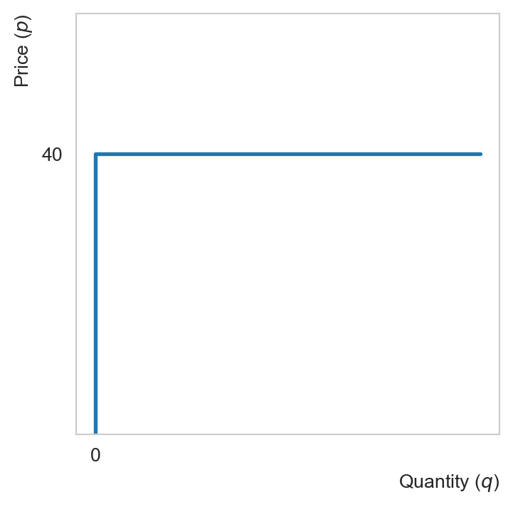
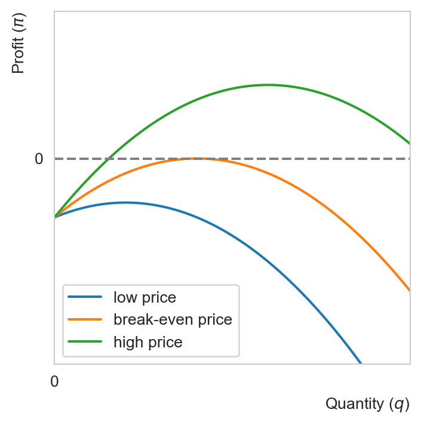
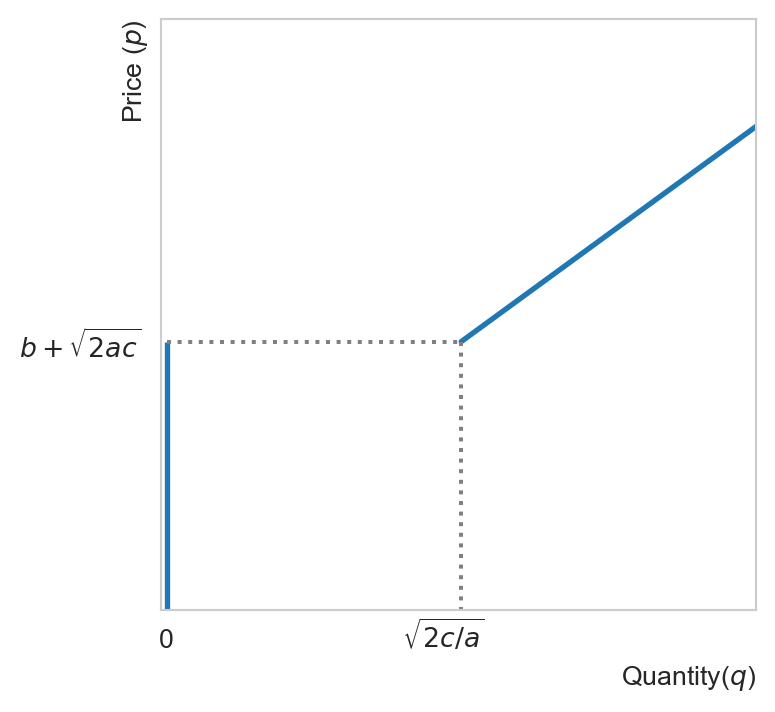
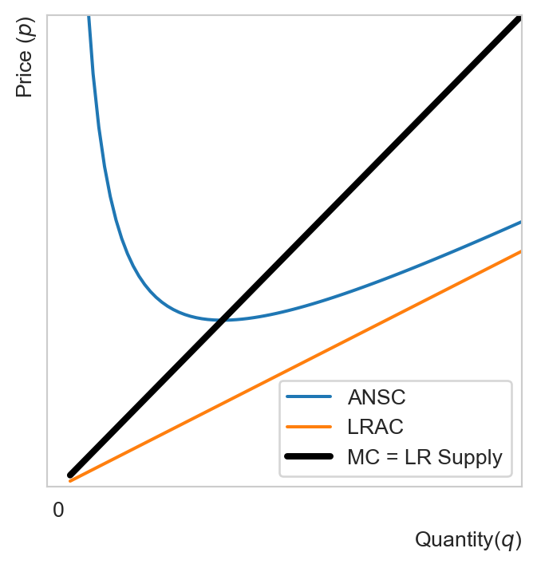
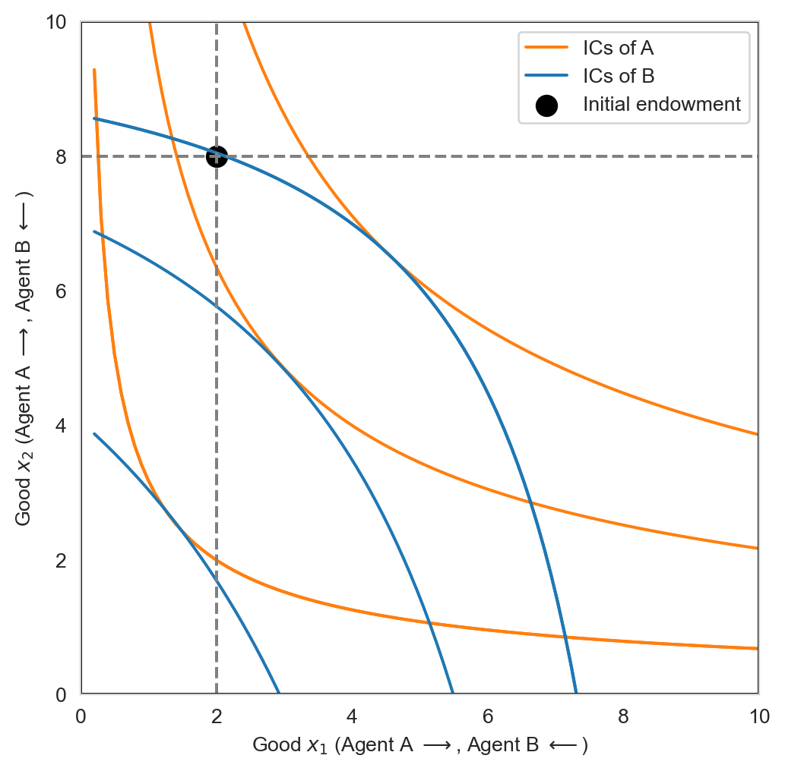

Chapter 3. Equlibrium
In this chapter we will be examining market equilibria. We shall begin by deriving the market supply curve, which results from firms’ optimal production decision. Likewise, market demand results from consumers’ optimal consumption decision. Searching for an equilibrium is essentially searching for prices that equalize demand and supply in the market. When a single market is considered in isolation, its equilibrium is a partial one. When all markets are considered, we speak of a general equilibrium. In a pure exchange economy, all markets are markets of consumption goods. In a production economy, the relevant markets include those of factors of production such as labor, capital and land. In this course, we will be mostly interested in general equilibria in a pure exchange economy.
1 Perfectly competitive markets
Our markets in this chapter are perfectly competitive, their features are:
Fragmentation: large number of producers and consumers whose decisions (to produce or consume) do not influence market prices of the goods. In other words, all market participants are price-takers
Undifferentiated products: products of all firms in the same industry are regarded as identical by consumers
Perfect information: information on prices are transparent and freely accessible by consumers
Free entry and exit: in the long run (LR), firms can freely enter and exit
Example: Wheat, corn, or agricultural commodities
2 Firm’s profit maxmimization problem (PMP)
2.1 The PMP
Definition 1 (Firm’s PMP) Consider a price-taking firm in the market of the output good Given \(p\), the market price of the good, every firm’s PMP is: \[ \max_{q\geq 0} \pi = R(q) - C(q) = pq - C(q), \] where \(C(q)\) is the total cost function derived from the CMP introduced previously, \(R(q)\) denotes the total revenue.
Observe that the PMP includes the CMP as a first step
2.2 Necessary conditions
According to the KT conditions, either
we have a corner solution \(q=0\), or
We have an interior solution \(q>0\) satisfying the FOC:
\[ \pi'(q) = 0 \iff p = C'(q) \\ \iff p = MC(q). \]
Observe that for a price-taking firm, the marginal revenue is the market price of the good (as we shall see later, for a firm with market power, the marginal revenue is less than the price)
The FOC above implies that the firm produces up to a point where the marginal revenue (marginal benefit) is equal to the marginal cost.
2.3 Sufficient condition
The FOC is sufficient for a max if the profit function is concave in output. This is called the second-order condition (SOC)
We have:
\[ \pi''(q) = -C''(q), \]
implying that the SOC is satisfied if the cost function is convex in \(q\) (i.e., if the MC is increasing in output)
2.4 Examples
Example 1 Let us solve the PMP of a price-taking firm in the output market (and inputs market). Assume that it has a Cobb-Douglas production function defined by \(q(L, K) = L^{1/2}K^{1/2}\). The factor prices are \(w=\$40\) and \(r=\$10\) as before.
Step 1: Solve the CMP:
\[ \begin{aligned} &\min_{K,L} 40L + 10K \\ \text{s.t. } &q(L, K) = L^{1/2}K^{1/2} \geq q, \end{aligned} \]
for some target output level \(q\).
- The cost function can be obtained by replacing the solutions of the CMP into the objective function. This yields:
\[ C(q) = 40q. \]
Step 2: Substitute \(C(q)\) obtained from the CMP into the PMP so that this problem reads:
\[ \max_{q\geq0} \pi(q) = pq - 40q = (p - 40)q. \]
Clearly if \(p<40\) the firm should shut down
If \(p\geq 40\), the firm produces as much as possible since the profit is then incresing in output
We thus obtain a perfectly elastic individual supply curve
Note that this is the long-run individual supply curve since all inputs are variable. One can also verify that the long-run cost function does not have a fixed cost.
Example 2 Suppose we have obtained a convex cost function for the firm of the form: \[ C(q) = 0.5 a q^2 + bq + c, \] where \(a\), \(b\) and \(c\) are strictly positive constants. Observe that this is a short-run cost function since fixed costs (\(c\)) are present. The profit maximizing condition for the firm is: \[ C'(q) = a q + b = p \iff q = \frac{p - b}{a}. \tag{1}\]
To determine the short-run supply curve of the firm, we need to understand the nature of the fixed costs represented by \(c.\) In the short-run, firms are typically do not try to make positive profits, i.e., they do not need to sell each unit for at least their average total cost. Firms only need to recuperate the non-sunk part of the fixed cost. Sunk costs are fixed costs that cannot be recovered by the firm and thus should not affect its decision on future output. For example, advertising costs once spent cannot be recovered. Lease payments, on the other hand, are non-sunk fixed costs can be recovered by sublease if the firm eventually decides to shut down.
For simplicity, suppose that \(c\) is non-sunk. The average total cost in this case is equal to the average non-sunk total cost (ANSC).The firm produces so long as the market price is above the ANSC: \[ \begin{aligned} \pi(q^*) > 0 &\iff p > \frac{C(q^*)}{q^*} \\ &\iff p > 0.5 a q^* + b + \frac{c}{q^*} \\ &\iff p > 0.5 a \frac{p - b}{a} + b + \frac{ca}{p - b} \\ &\iff (p - b)^2 > 2ca \\ &\iff p > b + \sqrt{2ca}. \end{aligned} \tag{2}\]
Observe that the last line follows from the fact that \(q^* > 0\) if and only if \(p > b\) in view of Equation 1. This condition tells us that in the SR, the firm suffers from a fixed cost (\(c\)), which might prevent it from earning positive profits even if it is operating optimally. Note that \(p > b + \sqrt{2ca}\) is equivalent to \(q > \sqrt{2c/a}.\)


2.5 Long-run vs short-run firm’s supply
The profit maximizing condition for a competitive firm is that its marginal cost is equal to the market price. This is common for the firm both in the long run and in the short run. The difference lies in the shutdown condition.
In the short run, firms shutdown if the price cannot cover the average non-sunk costs (ANSC), implying that supply will be:
- zero for all levels of output for which the marginal cost (which is equal to the market price under profit maximizing) is below the ANSC curve, and
- the part of the marginal cost that is above the ANSC (when output is positive)

In the long run, all costs are variable. The average cost (AC) is just the average variable cost (AVC). The firm produces so long as the market price can cover the AVC (or the AC), hence the LR supply curve will be:
- zero for all levels of output for which the marginal cost (which is equal to the market price under profit maximizing) is below the AC (or AVC) curve, and
- the part of the marginal cost that is above the AC (or AVC)
Note that the SR firms might suffer from losses due to non-sunk fixed costs, but so long as the price can cover the ANSC, it is optimal for them to produce. In the LR, however, the firm produces so long as it earns positive profits and shuts down otherwise.
3 Partial Equilibrium
The equilibrium of a market is a vector of price and quantity for which the market supply and demand are equal. In other words, the equilibrium price is the price that clears the market by equating demand and supply. We have already discussed the market demand curve in the first lecture. We now examine the supply side of the market for which there exists differences between the long run and the short run.
3.1 Short-run equilibrium
In the short run, the market supply curve is an horizontal aggregation of individual supplies. In other words, to construct the SR market supply curve, one adds up the quantities supplied by all the firms in the market at each given price. The market demand curve is constructed in the same manner. By equating supply and demand, we can determine the market equilibrium.
Example 3 Suppose the market demand is given by \(q^D(p) = 100 - 2p.\) Consider a market with \(N\) identical firms, each facing the same cost function \(C(q)=10−5q+2q^2.\) In view of Exercise 1, the SR market supply is given by: \[ q^S(p) = \begin{cases} N(p/4 + 5/4) & p > 4\sqrt{2.5}-5\approx 1.32 \\ 0 & \mathrm{otherwise.} \end{cases} \]
In equilibrium \(q^S(p) = q^D(p)\): \[ \begin{aligned} 100 - 2p &= N(p/4 + 5/4) \\ p &= \frac{5(80 - N)}{8 + N}. \end{aligned} \] Hence the market price is a decreasing function of the number of firms. Knowing the shutdown price, we can determine the maximum number of firms that can exist in this market: \[ \frac{5(80 - N)}{8 + N} = 1.32 \iff N = 61.6. \]
The short-run equilibrium quantity is:
\[ q^* = 100 - 2p^* = \frac{110N}{8 + N}, \quad N \leq 61. \]
Hence given the number of firms in the market, we can determine its SR supply curve, which together with the market demand curve defines the equilibrium price and quantity. The market shuts down if \(N\) is too large.
3.2 Long-run equilibrium
In a competitive market, firms can freely enter or exit. If there is an opportunity to make economic profits in a market, firms will enter, pushing down market prices and drive away profits. Note that making profits does not imply making economic profits. Economic profits take into account the opportunity cost of the firm. For instance, if leaving money in a bank earns an interest of 5% per month and the firm is generating less than 5% return on investment, it is not making economic profits even though it is making profits. A long-run equilibrium is reached when the following conditions are satisfied:
- Every firm is maximizing profits: \(p=MC(q)\)
- Each firm makes zero economic profits: \(p=AC(q)\). This means that firms make the same profits in other competitive markets (hence no incentives for other firms to enter or for existing firms to exit)
- The market clears: market demand equal to LR market supply at the equilibrium price
Hence in a LR equilibrium, firms are doing the best they can do in the market which they have no incentives to leave and no other firms have incentives to enter because of zero economic profits, and the price is such that supply is equal to demand.
Consider a perfectly competitive industry populated by identical firms with the cost function \(C(q)=10 - 5q + 2q^2\). We would like to determine the long-run equilibrium of the market as well as the equilibrium number of firms operating in it.1
Denote the LR equilibrium quantity, price and market size \(q^*\), \(p^*\) and \(N^*,\) respectively.
Since each firm in the market sets \(MC(q_i^*) = AC(q_i^*)\): \[ \begin{aligned} -5 + 4 q^*_i &= \frac{10}{q_i^*} - 5 + 2 q_i^* \\ q_i^* &= \sqrt{5} \approx 2.24. \end{aligned} \]
Since \(MC(q_i^*) = p^*\), we can deduce the LR equilibrium market price: \[ p^* = -5 + 4 q^*_i = -5 + 4 \sqrt{5} \approx 3.94 \]
Equilibirum quantity can be found using the market demand equation: \[ q^* = 100 - 2p^* \approx 92.11 \]
The number of active firms in the LR: \[ N^* = \frac{q^*}{q_i^*} \approx 41.19 \]
Hence in the LR equilibrium, the price will be about \(\$3.94\) per unit. At this price about \(92\) units will be produced by about \(41\) firms.[^2]
4 General equilibrium in a pure exchange economy
The partial equlibrium we consider above concerns a single market. In a general equilibrium analysis, we examine all markets at the same time, taking into account the interconnectedness among different markets. We shall restrict our attention to the case of an exchange economy with two consumers and two consumption goods. Each individual has an initial endowment and they can trade with one another if they wish.
A list or a vector of endowments keeps track of the amount of each good each consumer can enjoy when they do not trade: \[ e \equiv (e_1^A, e_2^A;e_1^B, e_2^B). \]
The Edgeworth box is a useful tool to represent an exchange economy with two consumers and two goods. The width and length of the box represent the total endowment of each good.

An allocation lists the amount of each good that each consumer consumes: \[ x \equiv (x_1^A, x_2^A, x_1^B, x_2^B). \]
Note that \(x\) can be different from \(e\) with trade. An allocation is feasible if the total demand/allocation of each good does not exceed its total supply/endowment. In an economy of \(N\) consumers and \(L\) goods, this means: \[ \begin{aligned} \sum_{i=1}^N x^i_j \leq \sum_{i=1}^N e^i_j,\quad j=1,\dots,L. \end{aligned} \]
In our case of interest \(i\in\{A, B\}\) and \(L=2.\) Observe that any point inside or on the side of the Edgeworth box is feasible.
Definition 2 (General equilibrium in an exchange economy) We say that a price vector \(p\in\mathbb{R^L_{++}}\) and an allocation \(x\in\mathbb{R^L_{+}}\) constitute a competitive general equilibrium in an exchange economy if:
- The allocation \(x\) is feasible
- Given prices, \(x\) solves the UMP of every consumer
- The equilibrium price \(p\) clears all markets. This means that the aggregate demand is equal to aggregate supply for each good: \[ q_j^D(p_j) = q_j^S(p_j),\quad \forall j=1,\dots,L. \] In the case of a pure exchange economy, aggregate supply is equal to total endowment
Recall that for each consumer that has an interior solultion to their UMP, the marginal utility per dollar is equalized across the goods. Mathematically, this condition was:
\[ \frac{U^i_k(x^*)}{p_k} = \frac{U^i_l(x^*)}{p_l}, \tag{3}\]
where \(U^i_k(x^*)\) denotes the partial derivative of \(U^i\), the utility function of consumer \(i\) with respect to good \(k\), evaluated at the optimal consumption bundle \(x^{*}\) of this person, and \(p_k\) is the price of good \(k\). This condition must hold for all goods \(k,l=1,\dots,L\) and for every individual \(i=1,\dots,N\). Observe that Equation 3 is equivalent to:
\[ % \begin{aligned} % \frac{U^i_k(x^*)}{U^i_l(x^*)} &= \frac{p_k}{p_l} \\ MRS^i_{k,l}(x^*) = \frac{p_k}{p_l}, \quad\forall i=1,\dots,N. % \end{aligned} \tag{4}\]
Hence in equilibrium, the MRS is equal to the price ratio for each individual. This condition together with binding budget constraints will give us the optimal allocation as a function of prices (or more precisely price ratios), which can in turn be determined by the market clearning conditions. Let us look at an example.
Example 4 Consider two consumers with identical preferences represented by a Cobb-Douglas utility function: \[ u(x_1, x_2) = x_1 x_2. \] Their initial endowment is:
\[ \begin{eqnarray} e^A &=& (100, 350) \\ e^B &=& (100, 50) \end{eqnarray} \] In autarky each individual can always consumer their endowments. The question is, can they do better with trade? If yes, how much (the allocation), and at which terms (the price ratio)? Let us first solve each individual’s UMP, which is: \[ \begin{aligned} &\max_{x^i} u(x^i) = x_1^i x_2^i,\\ &\text{s.t. } px^i \leq pe^i,\quad i=A,B. \end{aligned} \] In optimality: \[ MRS^i_{1,2} = \frac{p_1}{p_2} \iff p_1x_1^i = p_2x_2^i. \tag{5}\] The budget constraints bind, implying: \[ \begin{aligned} px^i &= pe^i \\ \end{aligned} \tag{6}\] Equation 5 and Equation 6 provide a system of two equations in two unknowns for each consumer. Solving this system yields: \[ \begin{aligned} x_1^i &= \frac{pe^i}{2p_1}, \quad i=A,B \\ x_2^i &= \frac{pe^i}{2p_2}, \quad i=A,B. \\ \end{aligned} \tag{7}\] In order to solve for the price ratio, we only need to consider the market clearing condition for \(L-1\) markets, which is just a single market in this example. Let us consider this condition for the market of \(x_1\): \[ \begin{aligned} x_1^A + x_1^B &= e_1^A + e_1^B \\ \frac{pe^A + pe^B}{2p_1} &= e_1^A + e_1^B \\ p_2(e^A_2 + e^B_2) &= p_1(e_1^A + e_1^B) \end{aligned} \]
\[ \frac{p_2}{p_1} = \frac{e_1^A + e_1^B}{e_2^A + e_2^B}. \tag{8}\] Substituting the specific values of endownments into Equation 7 and Equation 8, we obtain the equilibrium allocation and price ratio. In particular:
\[ \begin{aligned} (x_1^A, x_2^A) &= (137.5,275), \\ (x_1^B, x_2^B) &= (62.5,125), \\ \frac{p_2}{p_1} &=\frac{1}{2}. \end{aligned} \]
Observe that in equilibrium, the first good is twice as valuable as the first one. This is no coincidence: each consumer extracts the same utility from each good, and yet the second one is twice as abundant as the first.
Remark 1. Note that in a market of \(L\) goods, one good is chosen as a numeraire and the price ratios give us the prices of the other goods in the units of the numeraire. In a sense, this gives us the real prices of goods, which, rather than nominal prices, matter for optimal allocation. One can verify this intuition quickly by imagining a situation when prices double for all goods (i.e., water raises all boats by the same proportion): the nominal value of wealth doubles, but so does the cost of consumption, hence the optimal allocation should not be modified.
5 Welfare theorems
The equilibrium we have found in the previous section is called a competitive equilibrium. It is competitive in the sense that each person does what is in the best interest and the markets clear at the equilibrium prices. This is also referred to as a decentralized equilibrium because it is not the result of some benevolent central authority allocating aggregate resources in a way that they judge best.
Economic decisions are all about efficient allocation of resources. Economic problems exist because resources are scarce. A natural question arises, then, is the competitive equilibrium allocation (CEA) obtained by each one acting in their best interest, efficient?
In economics, the notion of efficiency of interest is Pareto efficiency. We say that an allocation is Pareto efficient if there exists no other allocation that is strictly better off for someone without being worse off for someone else. In other words, an efficient allocation is one that cannot be improved for someone without hurting someone else. In a market with no market failures, it can be shown that under mild conditions, a CEA is Pareto efficient. This is the first welfare theorem (FWT). Graphically, the Pareto efficient allocation lies at the tangency of any two ICs in the Edgeworth box. This means that such allocations are not unique, and in fact the locus of all Pareto efficient allocations (PEA) forms the so-called contract curve. How come we found only one of them in the previous example? This is because which Pareto efficient allocation can be achieved by market forces alone depends on the initial endowment. If we want to alter the outcome, we need to modify the starting point. This is the idea behind the second welfare theorem (SWT).
Another natural question that one might ask is why would an economy prefer a different Pareto efficient allocation? Why bother redistributing resources to incentivise the market to achieve a different allocation at all? It is because on top of efficiency, societies also care about equality. If one starts out with abundant resources, then market forces alone tend to lead to an efficient allocation that gives more to the haves and less to the have-nots.
To sum up, the FWT tells us that when there are no market failures, the CEA is Pareto efficient. The SWT says that any Pareto efficient, i.e., any point on the contract curve, can be obtained by redistributing initial resources and then letting the market work (again under some conditions). Let us state these important results formally.
Theorem 1 (First welfare theorem) Every competitive equilibrium allocation is Pareto efficient.
Theorem 2 (Second welfare theorem) Consider an a efficient allocation \(\bar{x}\) and a redistribution of the initial endowment from \(e\) to \(\bar{e}\) such that \(p\bar{e}^i = p\bar{x}^i\) for every individual \(i=A, B\). Then every efficient allocation can be supported by a competitive equilibrium allocation.
Let us illustrate the SWT by continuing with Example 4. The condition for an allocation to be a CEA was: \[ \begin{eqnarray} MRS_{1,2}^A(x^A) &=& MRS_{1,2}^B(x^B) = \frac{p_1}{p_2} \\ \frac{x_2^A}{x_1^A} &=& \frac{x_2^B}{x_1^B} = \frac{1}{2}. \end{eqnarray} \] Hence any allocation satisfying \(x_2^i = 2 x_1^i\) is a CEA, which is also a PEA by the FWT. Given the initial endowment, we have obtained for this example:
\[ \begin{aligned} (x_1^A, x_2^A) &= (137.5,275), \\ (x_1^B, x_2^B) &= (62.5,125). \end{aligned} \]
But this is not the only PEA. For example, another PEA satisfying \(x_2^i = 2 x_1^i\) is \[ \bar{x}^i \equiv (x_1^i, x_2^i) = (100, 200), \quad i=A,B. \] Can this this PEA emerge as a CEA? The SWT tells us yes. According to the SWT, we need to modify the initial endowments in such a way that the budget constraint still binds for each consumer: \[ \begin{aligned} p\bar{x}^i &= p\bar{e}^i \\ p_1 \bar{x}_1^i + p_2 \bar{x}_2^i &= p_1 \bar{e}_1^i + p_2 \bar{e}_2^i \\ \bar{x}_1^i + \frac{p_2}{p_1} \bar{x}_2^i &= \bar{e}_1^i + \frac{p_2}{p_1} \bar{e}_2^i \end{aligned} \]
\[ \therefore \bar{x}_1^i + 2\bar{x}_2^i = \bar{e}_1^i + 2\bar{e}_2^i. \tag{9}\]
Substituting the values of the new PEA into Equation 9 for each consumer, we obtain two equations in four unknowns \(\bar{e}_1^A, \bar{e}_2^A, \bar{e}_1^B, \bar{e}_2^B\). We need two other equations to solve for these unknowns; they come from the market clearing conditions. Putting all this together, we obtain the following system: \[ \begin{aligned} \bar{x}_1^A + 2\bar{x}_2^A &= \bar{e}_1^A + 2\bar{e}_2^A, \\ \bar{x}_1^B + 2\bar{x}_2^B &= \bar{e}_1^B + 2\bar{e}_2^B, \\ \bar{x}_1^A + \bar{x}_1^B &= \bar{e}_1^A + \bar{e}_1^B, \\ \bar{x}_2^A + \bar{x}_2^B &= \bar{e}_2^A + \bar{e}_2^B. \end{aligned} \]
Note that only three of the four equations from the system above are linearly independent (one degree of freedom), implying that solutions are not unique. One immediate solution is \(\bar{e} = \bar{x}\). In other words, if we give each individual a PEA, they will stick to it. Observe that \[ \begin{aligned} e &= (100, 350, 100, 50) \\ \bar{e} &= (100, 200, 100, 200). \end{aligned} \] Thus one way to redistribute is to tax \(A\) an amount equivalent to 150 units of the first good and give them to \(B\).
6 General equilibrium with production
6.1 Adding production to the economy
In a production economy, consumers own factors of production, which they can rent out to firms to earn income. Firms choose the quantity of factors of production to maximize profit, taking as given the prices (of factors and final consumption goods). Consumers choose the quantity of consumption goods to maximize utility, taking as given prices (of factors and final consumption goods). In equilibrium, aggregate demand is equal to aggregate supply in each market, including markets of production factors.
Consider an economy two consumers with Cobb-Douglas utility function \[ u(x_1^i, x_2^i) = x_1^i x_2^i \] for each consumer \(i=A, B\) whose endowments are: \[ \begin{aligned} e^A &= (k^A, l^A), \\ e^B &= (k^B, l^B). \end{aligned} \tag{10}\]
Suppose there are two firms in the economy, each producing one of the consumption goods according to a Cobb-Douglas technology: \[ \begin{aligned} y_1 = F^1(K_1, L_1) &= K_1^a L_1^b, \\ y_2 = F^2(K_2, L_2) &= K_2^b L_2^a, \end{aligned} \] where \(a+b=1\) and \(a, b \in (0,1)\).
An allocation \((x_1^A, x_1^B, x_2^A, x_2^B, K_1, L_1, K_2, L_2)\) and a price vector \(p=(p_1, p_2, w, r)\) constitute a competive equilibrium (or Walrasian equilibrium) of the production economy if:
Given prices, \((x_1^i, x_2^i)\) solves the UMP for each consumer \(i\in\{A,B\}.\)
Given prices, \((K_j, L_j)\) solves the PMP for each firm \(j\in \{1,2\}.\)
Prices are such that markets clear: \[ \begin{aligned} \text{Consumption goods: }\sum_i x^i_j &= y_j \equiv F^j(K_j, L_j), \quad \forall j=1,2, \\ \text{Capital good: }\sum_j K_j &= k^A + k^B, \\ \text{Labor good: }\sum_j L_j &= l^A + l^B. \end{aligned} \] In other words, we are in an equilibrium if ever agent optimizes and markets clear. Let us first consider the consumers, who face the UMP.
6.2 UMP
Consumer \(i\) solves: \[ \begin{aligned} &\max_{x^i} u(x^i) \\ &\text{s.t. } px^i \leq wl^i + rk^i. \end{aligned} \tag{11}\]
Observe that since consumers own labor and capital, their income come from renting out these factors of production. The FONC yields: \[ u'_j(x^i) = \lambda_i p_j, \quad\forall j=1,2. \tag{12}\]
Since \(u'_j>0\) we must have \(\lambda > 0\) in optimality, implying that the BC binds: \[ px^i = wl^i + rk^i. \]
Moreover: \[ MRS_{1,2}^i = \frac{p_1}{p_2},\quad \forall i\in\{A,B\}. \tag{13}\]
Equation 13 implies:
\[ \frac{x^i_2}{x^i_1} = \frac{p_1}{p_2} \quad \forall i, \]
which together with the binding BC provide the optimal consumption bundle for each consumer as function of factor prices and endowments. In particular:
\[ x_j^i = \frac{wl^i + rk^i}{2p_j},\quad i\in\{A, B\},\quad j\in\{1, 2\}. \tag{14}\]
Denote the total endowment \(l=\sum_i l^i\) and \(k= \sum_i k^i.\) By the market clearing condition for good 1: \[ \begin{aligned} x_1^A + x_1^B &= y_1 = F^1(K_1, L_1) = K_1^a L_1^b \\ \frac{wl + rk}{2p_1} &= K_1^a L_1^b. \end{aligned} \tag{15}\]
Likewise for the second good: \[ \frac{wl + rk}{2p_2} = K_2^b L_2^a. \tag{16}\]
Dividing Equation 16 by Equation 15 side by side yields: \[ \frac{p_1}{p_2} = \frac{K_2^b L_2^a}{K_1^a L_1^b}. \tag{17}\]
Next we consider firms, who seek to maximize profits.
6.3 PMP
Each firm \(j=1,2\) solves their profit maximization problem (PMP):
\[ \max_{K_j, L_j} \pi_j = p_j F^j(K_j, L_j) - rK_j - wL_j. \tag{18}\]
In optimality: \[ p_j F_K^j = r, \quad p_j F_L^j = w. \tag{19}\]
Hence: \[ \begin{aligned} \frac{p_1}{p_2} &= \frac{F_K^2}{F_K^1} = \frac{F_L^2}{F_L^1} \\ \frac{p_1}{p_2}&= MRT_{1,2}^K = MRT_{1,2}^L. \end{aligned} \tag{20}\]
The \(MRT^K_{1,2}\) is the rate at which the economy transforms the second good into the first good using capital. Observe that Equation 13 and Equation 20 together say that at an optimum, the economy transforms one good for the other at the rate consumers are willing to substitute one for the other. From Equation 17 and Equation 20 and the fact that \(a+b=1,\) we have: \[ \begin{aligned} \frac{p_1}{p_2} = \frac{F_K^2}{F_K^1} &= \frac{K_2^b L_2^a}{K_1^a L_1^b} \\ \frac{b K_2^{b-1} L_2^a}{a K_1^{a-1} L_1^b} &= \frac{K_2^b L_2^a}{K_1^a L_1^b} \\ \implies \frac{K_2}{K_1} &= \frac{b}{a}. \end{aligned} \tag{21}\]
We will now solve for the CEA of this economy using the market clearing conditions.
6.4 The CEA
Combining Equation 21 and the market clearing condition for the capital market \(K_1 + K_2 = k,\) we can solve for the optimal values of capital. In particular,
\[ K_1 = a k, \quad K_2 = b k. \tag{22}\]
From Equation 17 and Equation 20 and the fact that \(a+b=1,\) we have: \[ \frac{L_2}{L_1} = \frac{a}{b}. \tag{23}\]
Again, combining Equation 23 and the market clearing condition for the labor market \(L_1 + L_2 = l,\) we obtain:
\[ L_1 = a l, \quad L_2 = bl. \tag{24}\]
Having computed factor demands, we can substitute these values into Equation 17 to determine equilibrium price ratio \(p_1/p_2\). We can then normalize \(p_2\equiv 1,\) to obtain: \[ p_1 = \frac{b}{a}\left(\frac{k}{l}\right)^{b-a}. \tag{25}\]
Factor prices can then be determined from Equation 19. The equilibrium allocations \(x^A, x^B\) can be determined by substituting factor and consumption prices into Equation 14.
8 Exercises
Exercise 1 Consider a firm with the total cost function \(C(q)=10−5q+2q^2\). Assume that this fixed cost is evenly distributed into sunk costs, \(\$5\), and non-sunk costs, \(\$5\). Show that the firm’s SR supply curve is given by:
\[ q(p) = \begin{cases} p/4 + 5/4 & p > 4\sqrt{2.5}-5\approx 1.32 \\ 0 & \mathrm{otherwise.} \end{cases} \]
Answer
The nonsunk cost is \(NSC(q) = 5 - 5q + 2q^2\)
Effectively we maximize \(pq - NSC(q)\) (we forget about the sunk costs), which is convex in \(q\)
FOC gives: \[p = MC(q) \iff p = 4q - 5 \iff q = (p+5)/4\]
Firm produces iff revenue covers nonsunk costs, i.e., if price is greater than ANSC. Shutdown point (crossing point between MC and ANCS):
\[ p = MC(q) = ANSC(q) = \frac{5}{q}-5+2q \\ \iff q=\sqrt{2.5} \implies p = 4\sqrt{2.5} - 5 \approx 1.32. \]
- Below \(p=1.32\), the firm shuts down since it cannot recover nonsunk costs
Exercise 2 Consider a perfectly competitive industry populated by identical firms with the cost function \(C(q)=10 - 5q + 2q^2\). Suppose the market demand is given by \(q^D(p) = 400 - 2p\). Determine the long-run equilibrium price, quantity and the number of firms.
Answer
See Exercise 2. Observe the change in demand and equilibrium of the market.Exercise 3 Consider a two-person two-good economy with the following preferences: \[ \begin{align} u_1(x_1, y_1) &= x_1y_1, \\ u_2(x_2, y_2) &= x_2y_2^2, \end{align} \] where \(x_i\) and \(y_i\) the amounts of good \(x\) and good \(y\) that individual \(i\) consumes, respectively. Suppose that the first person has an initial endowment of \(40\) units of \(x\) and \(160\) units of \(y\) while the second has \(240\) units of \(x\) and \(120\) units of \(y\).
- Represent this economy using and Edgeworth box.
- Define and compute the competitive equililibrium of this economy. Are the consumers better off with exchange (compared to eating their own endowments)?
- Define and solve the social planner’s problem for this economy and determine the set of Pareto efficient allocations (the contract curve) of this economy.
- Does the first welfare theorem hold for this economy?
Footnotes
Note that we are given a short-run cost function, which has a fixed cost, but we would like to determine the market equilibrium in the long run.↩︎